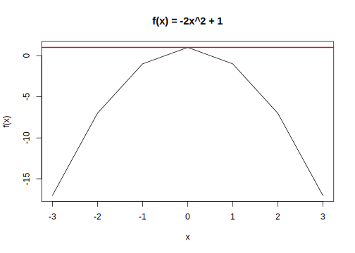

3.3 Derivatives
We will need to take some derivatives in the course. The reason is because a derivative gets us closer to understanding how to minimize and maximize certain functions, where a function is a relationship that maps elements of a set of inputs into a set of outputs, where each input is related to one output.
This is useful in social science, with methods such as linear regression and maximum likelihood estimation because it helps us estimate the values that we think will best describe the relationship between our independent variables and a dependent variable.
For example, in ordinary least squares (linear regression), we choose coefficients, which describe the relationship between the independent and dependent variables (for every 1 unit change in x, we estimate \(\hat \beta\) amount of change in y), based on a method that tries to minimize the squared error between our estimated outcomes and the actual outcomes. In MLE, we will have a different quantity, which we will try to maximize.
To understand derivatives, we will briefly define limits.
Limits
A limit describes how a function behaves as it approaches (gets very close to) a certain value
- \(\lim_{x \rightarrow a} f(x) = L\)
Example: \(\lim_{x \rightarrow 3} x^2 = 9\) The limit of this function as \(x\) approaches three, is 9. Limits will appear in the expression for calculating derivatives.
3.3.1 Derivatives
For intuition on a derivative, watch this video from The Math Sorcerer.
A derivative is the instantaneous rate at which the function is changing at x: the slope of a function at a particular point.
There are different notations for indicating something is a derivative. Below, we use \(f'(x)\) because we write our functions as \(f(x) = x\). Many times you might see a function equation like \(y = 3x\) There, it will be common for the derivative to be written like \(\frac{dy}{dx}\).
Let’s break down the definition of a derivative by looking at its similarity to the simple definition of a slope, as the rise over the run:
- Slope (on average): rise over run: change in \(f(x)\) over an interval (\([c, b]\) where \(b-c =h\)): \(\frac{f(b) - f(c)}{b-c}\)
For slope at a specific point \(x\) (the derivative of f(x) at x), we just make the interval \(h\) very small:
- \(f'(x)= \lim_{h \rightarrow 0}\frac{f(a + h) - f(a)}{h}\)
Example \(f(x) = 2x + 3\).
- \(f'(x) = \lim_{h \rightarrow 0}\frac{2(x + h) + 3 - (2x + 3)}{h} = \lim_{h \rightarrow 0}\frac{2x + 2h - 2x}{h} = \lim_{h \rightarrow 0}2 = 2\)
This twitter thread by the brilliant teacher and statistician Allison Horst, provides a nice cartoon-based example of the derivative. (Note that sometimes the interval \(h\) is written as \(\Delta x\), the change in \(x\)).


Images by Allison Horst
3.3.2 Critical Points for Minima or Maxima
In both OLS and MLE, we reach points where take what are called “first order conditions.” This means we take the derivative with respect to a parameter of interest and then set the derivative = 0 and solve for the parameter to get an expression for our estimator. (E.g., In OLS, we take the derivative of the sum of squared residuals, set it equal to zero, and solve to get an expression for \(\hat \beta\)).
The reason we are interested in when the derivative is zero, is because this is when the instanaeous rate of change is zero, i.e., the slope at a particular point is zero. When does this happen? At a critical point- maximum or minimum. Think about it– at the top of a mountain, there is no more rise (and no decline). You are completing level on the mountaintop. The slope at that point is zero.
Let’s take an example. The function \(f(x) = x^2 + 1\) has the derivative \(f'(x) = 2x\). This is zero when \(x = 0\).
The question remains: How do we know if it is a maximum or minimum?
We need to figure out if our function is concave or convex around this critical value. Convex is a “U” shape, meaning we are at a minimum, while concavity is an upside-down-U, which means we are at a maximum. We do so by taking the second derivative. This just means we take the derivative of the expression we already have for our first derivative. In our case, \(f''(x) = 2\). So what? Well the key thing we are looking for is if this result is positive or negative. Here, it is positive, which means our function is convex at this critical value, and therefore, we are at a minimum.
Just look at the function in R if we plot it.
## Let's define an arbitrary set of values for x
x <- -3:3
## Now let's map the elements of x into y using our function
fx <- x^2 + 1
## Let's plot the results
plot(x = x, y=fx,
xlab = "x", type = "l",
main = "f(x) = x^2 + 1")
Notice that when x=0, we are indeed at a minimum, just as the positive value of the second derivative would suggest.
A different example: \(f(x) = -2x^2 +1\). \(f'(x) = -4x\) When we set this equal to 0 we find a critical value at \(x = 0\). \(f''(x) = -4\). Here, the value is negative, and we know it is concave. Sure enough, let’s plot it, and notice how we can draw a horiztonal line at the maximum, representing that zero slope at the critical point:
x <- -3:3
fx <- -2*x^2 + 1
plot(x = x, y = fx,
ylab = "f(x)",
xlab = "x", type = "l",
main = "f(x) = -2x^2 + 1")
abline(h=1, col = "red", lwd=2)
3.3.3 Common Derivative Rules
Below is a cheat sheet of rules for quickly identifying the derivatives of functions.
The derivative of a constant is 0.
- \(f(x) = a; f'(x) = 0\)
- Example: The derivative of 5 is 0.
Here is the power rule.
- \(f(x) = ax^n; f'(x) = n\times a \times x^{n-1}\)
- Example: The derivative of \(x^3 = 3x^{(3-1)} = 3x^2\)
We saw logs in the last section, and, yes, we see logs again here.
- \(f(x) = e^{ax}; f'(x) = ae^{ax}\)
- \(f(x) = \log(x); f'(x) = \frac{1}{x}\)
A very convenient rule is that a derivative of a sum = sum of the derivatives.
- \(f(x) = g(x) + h(x); f'(x) = g'(x) + h'(x)\)
Products can be more of a headache. In this course, we will turn some product expressions into summation expressions to avoid the difficulties of taking derivatives with products.
- Product Rule: \(f(x) = g(x)h(x); f'(x) = g'(x)h(x) + h'(x)g(x)\)
The chain rule below looks a bit tricky, but it can be very helpful for simplifying the way you take a derivative. See this video from NancyPi for a helpful explainer, as well as a follow-up for more complex applications here.
- Chain Rule: \(f(x) = g(h(x)); f'(x) = g'(h(x))h'(x)\)
Example: What is the derivative of \(f(x) = \log 5x\)?
- First, we will apply the rule which tells us the derivative of a \(\log x\) is \(\frac{1}{x}\).
- However, here, we do not just have \(x\), we have \(5x\). We are in chain rule territory.
- After we apply the derivative to the log, which is \(\frac{1}{5x}\), we then have to take the derivative of \(5x\) and multiply the two expressions together.
- The derivative of \(5x\) is \(5\).
- So, putting this together, our full derivative is f′(x) = 5 ∗ \(\frac{1}{5x}\) = \(\frac{1}{x}\).